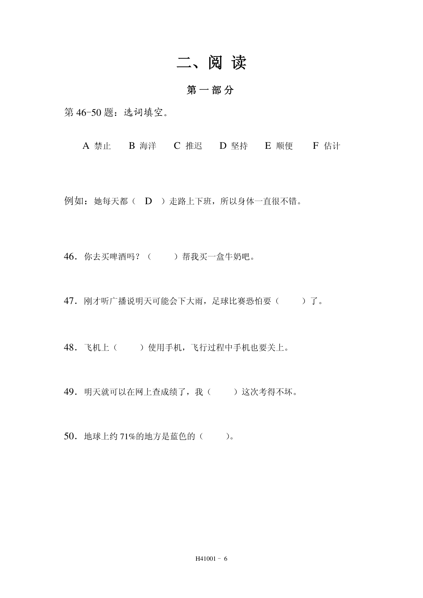
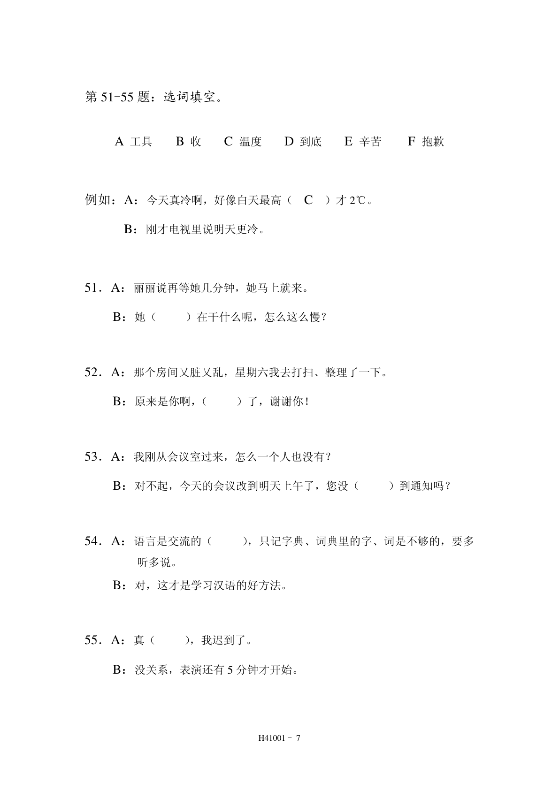
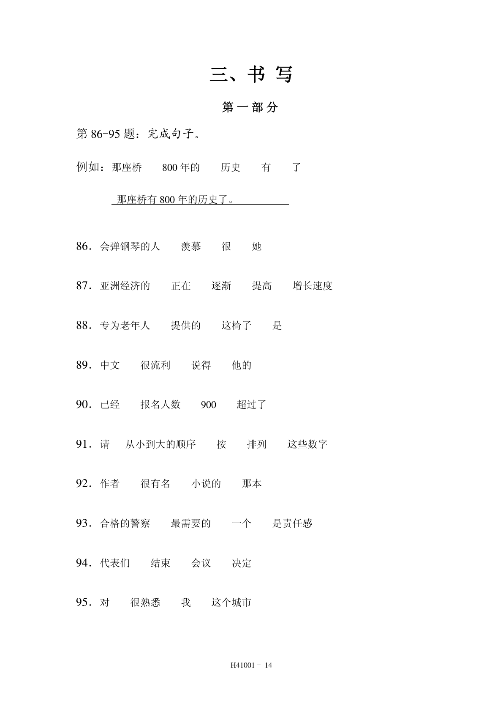
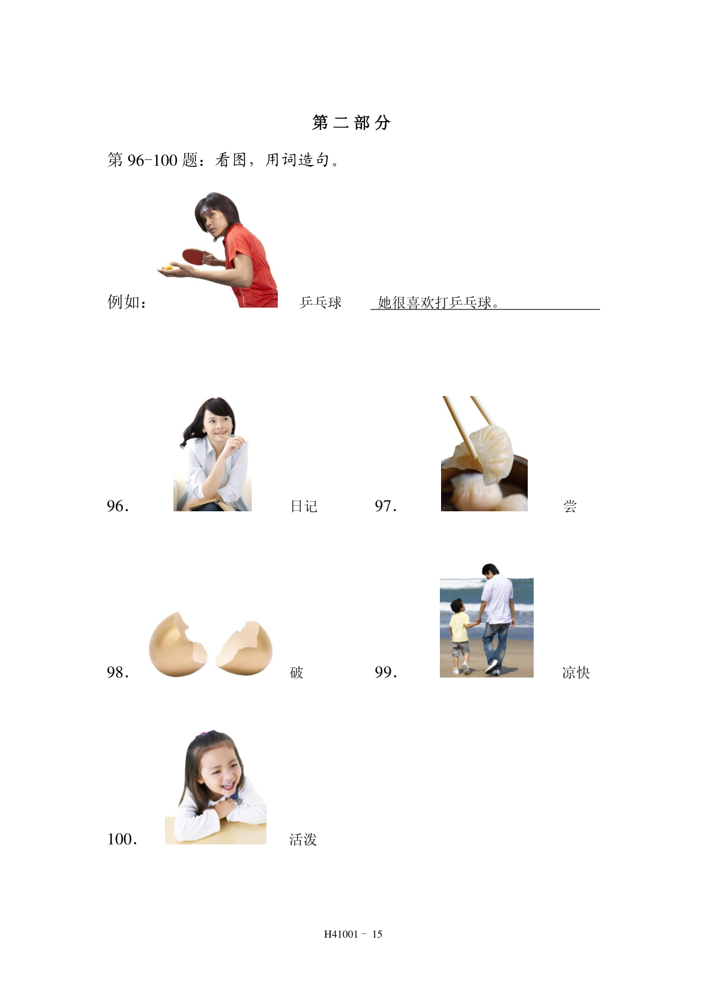

HSK4 – Đề 1 (H41001)
Kiểm tra trang PDF gốc trước khi tách câu. Không hiển thị đáp án. Chưa thay đổi SQL Server.
Đọc – Bảng lựa chọn câu 46–50

Đọc – Bảng lựa chọn câu 51–55

Viết – Sắp xếp câu 86–95

Viết – Nhìn hình đặt câu 96–100
